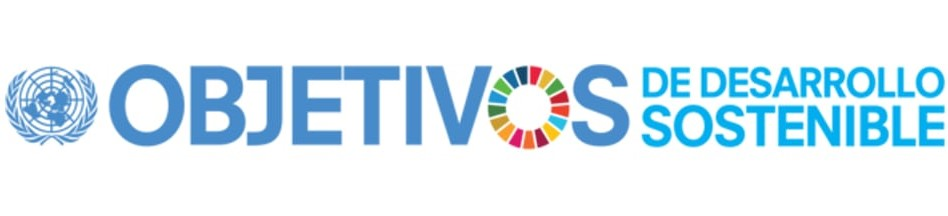

Home
Objetivos
1-6
1.Fin de la pobreza
2.Hambre cero
3.Salud y bienestar
4.Educacion de calidad
5.Igualdad de genero
6.Agua limpia
7-12
7.Energia Asequible
8.Trabajo decente
9.Industria innovacion
10.Reduccion desigualdad
11.Ciudades sostenibles
12.Consumo responsable
13-17
13.Accion por el clima
14.Vida submarina
15.Vida terrestre
16.Paz y justicia
17.Alianzas para objetivos
Principales retos
1.Instroducción
2.Principales retos ambientales y sociales
2.1.Cambio climático
2.2.Superpoblación
2.3.Consumo de agua
2.4.Contaminación
2.5.Deforestación
3.Impacto de los actuales problemas medioambientales
3.1.Impacto sobre las personas
3.2.Impacto sobre los sectores productivos
3.3.Importancia de tranajo tramsversal y las alianzas para frenar los impactos de los retos ambientales
4.Medidas y acciones para minimizar los impactos ambientales
4.1.Eficiencia energética
4.2.Gestion de residuos
4.3.Conservación de los recursos naturales
4.4.Control de la Contaminación
4.5.Movilidad sostenible
4.6.Innovavión tecnológica